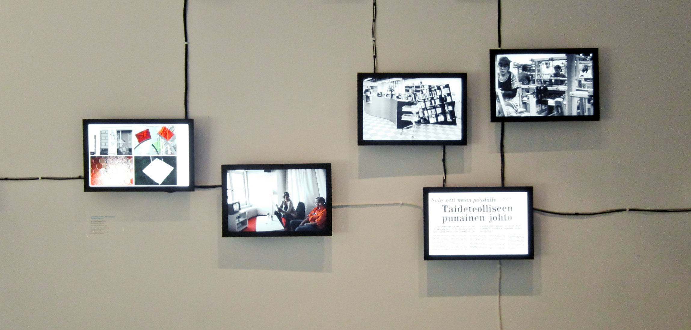
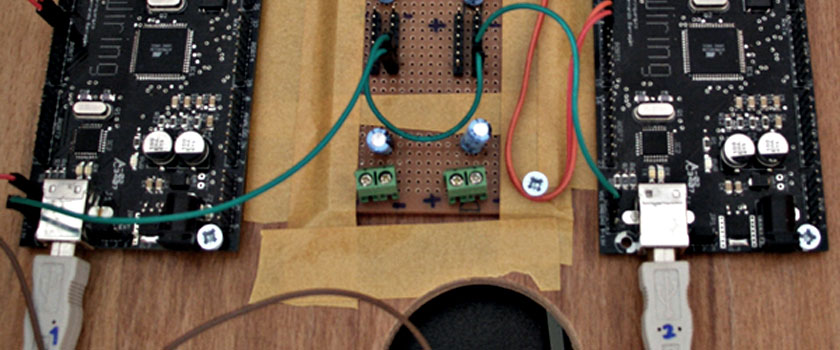

Content flow is an interactive installation that allows you to combine an unlimited amount of screens and audio to present videos, images and generated content.

The screens can also be synchorinized at any point to play the same content at the same time. This effect can also be triggered through user actions, such as someone entering the room.

Presented content is not limited to video and photos - any content including websites or interactive games can be presented on the screens.

Time flow allows you to show sequential data - such as dates or progress - in an interactive context. People moving through a space control the displaying of data on the screen.

People can move back and forth as they wish. Several simultaneous users are allowed.
The content displayed can be videos, images and text. Several instances can be combined to create a wider display surface.
See the video

ColorTV captures shared videos and intentionally lowers the size and the color resolution. Videos that are shared in online services are not the same. They become a blurred image, a light source, a momentarily representation in a museum.

As a low-res social video visualization device it serves as a medium between the shared videos and the casual watcher.